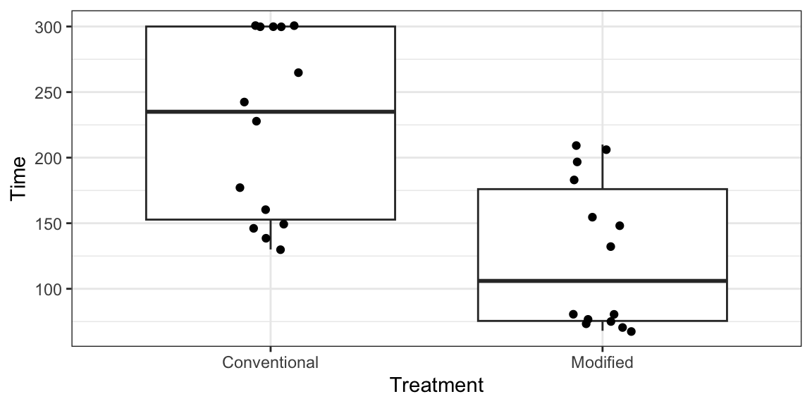
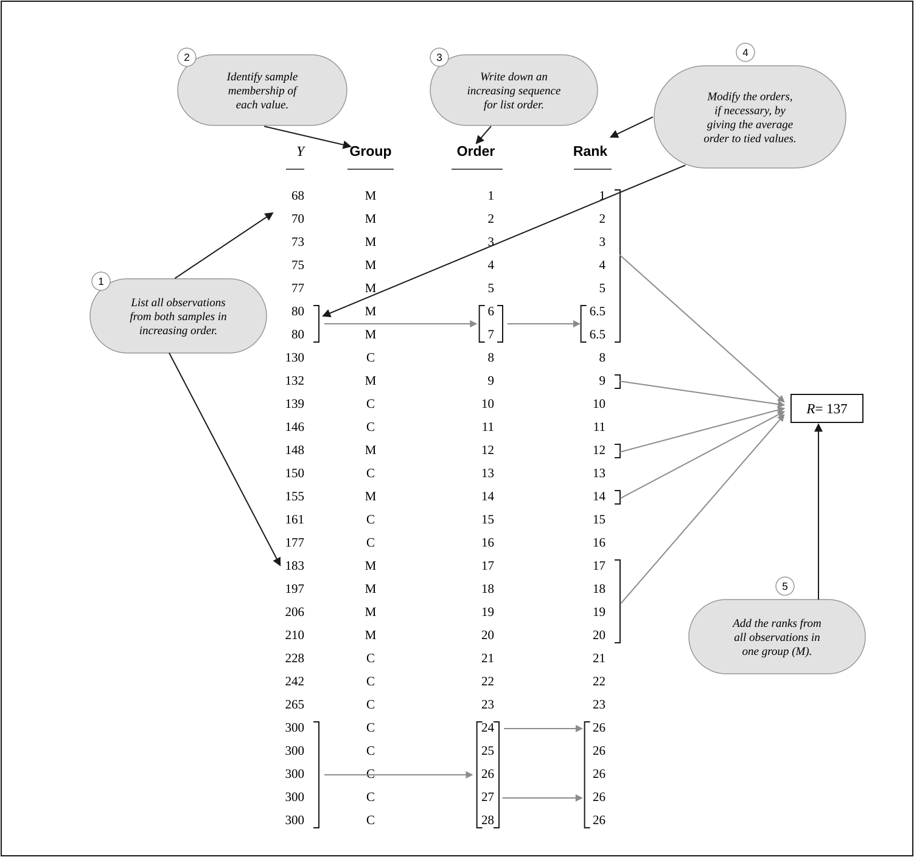
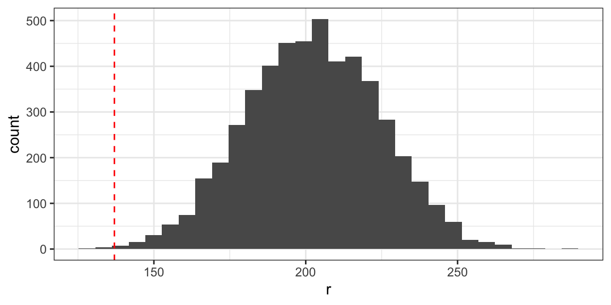
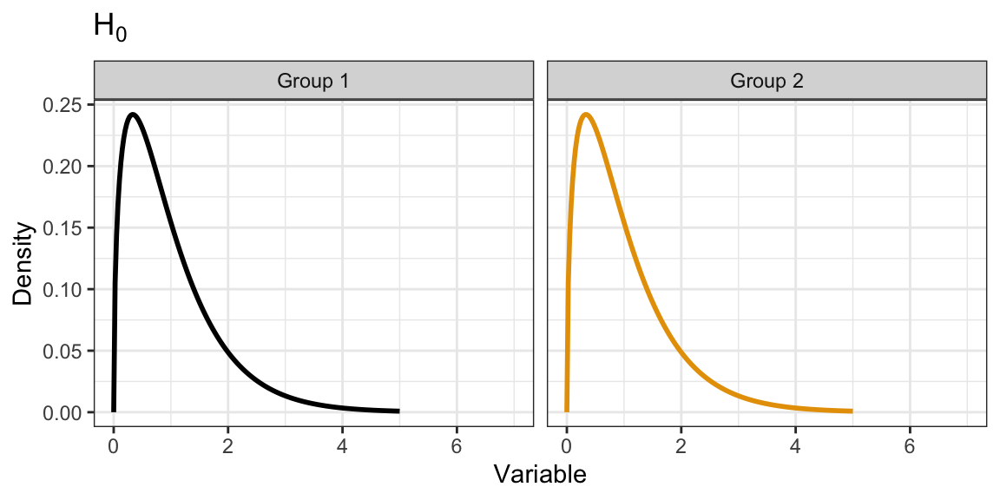
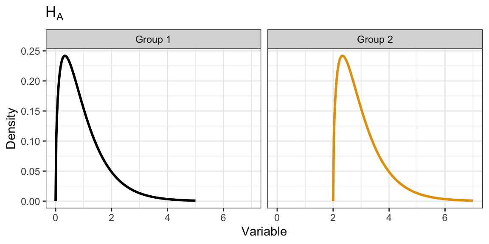
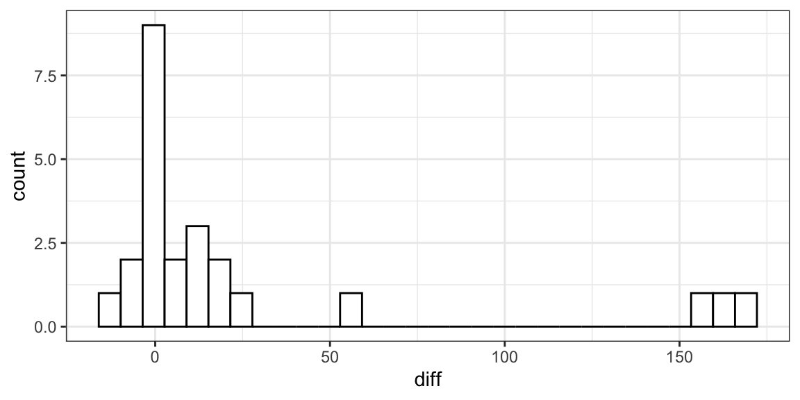
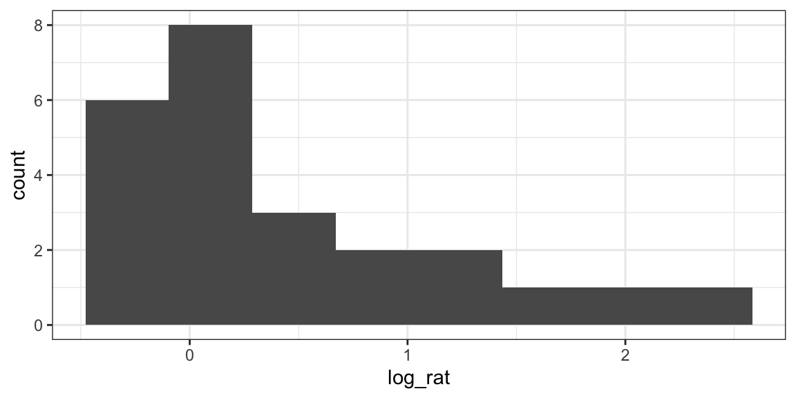
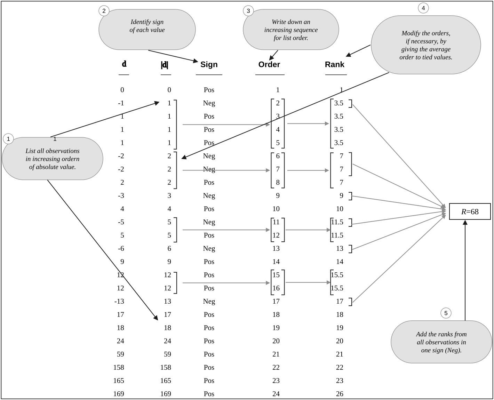
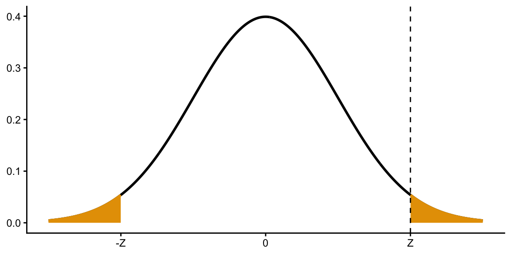
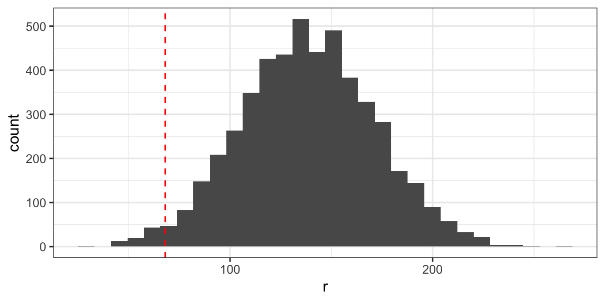

library(tidyverse)
library(broom)
library(gt)Non-parametric Alternatives to \(t\)-tools
Learning Objectives
- Recognize which non-parametric method to use in one- and two-sample scenarios.
- Understand the mechanisms of these non-parametric methods.
- Implement these non-parametric methods in R.
Assumptions of \(t\)-Tools
- Assumptions in decreasing order of importance:
- Independence between observational units.
- Equal variance (if assuming \(\sigma_1^2 = \sigma_2^2\)).
- Normality (no severe skew or outliers).
- Solutions when violated:
- Independence: Use multiple linear regression for cluster effects, or use serial correlation adjustment methods (Chapter 15).
- Equal variance: Use Welch’s \(t\)-test (which I think you should always use anyway).
- Normality: This chapter.
- Use a Wilcoxon rank sum test for a 2-sample \(t\)-test alternative.
- Use a Wilcoxon signed-rank test for a paired \(t\)-test alternative.
Case Study
Traditional mathematical graphics have text separate from the graph. Some researchers think this makes learning harder by creating excess “cognitive load”.
They assigned 14 students to learn a new mathematical subject using a traditional graph like this (“conventional”) and a different 14 students to learn using a graph that incorporates together text and the graph (“modified”).
They then had the students complete math problems using the techniques they learned from the graphics. They measured how long it took each student to complete them.
graph <- read_csv("https://dcgerard.github.io/stat_302/data/case0402.csv") glimpse(graph)Rows: 28 Columns: 3 $ Time <dbl> 68, 70, 73, 75, 77, 80, 80, 132, 148, 155, 183, 197, 206, 21… $ Treatment <chr> "Modified", "Modified", "Modified", "Modified", "Modified", … $ Censored <dbl> 0, 0, 0, 0, 0, 0, 0, 0, 0, 0, 0, 0, 0, 0, 0, 0, 0, 0, 0, 0, …These data are highly skewed and non-normal
ggplot(graph, aes(x = Treatment, y = Time)) + geom_boxplot() + geom_jitter(width = 0.1)
A more worrying issue is that there are 5 students in the conventional group that did not finish the math problems in the allotted time.
Their values are listed as “300”, but all we know is that their true values are greater than 300 seconds.
We call such values “censored”.
\(t\)-methods do not work well with very skewed data, and they cannot work at all with censored data. We need a new approach.
The Wilcoxon rank-sum test
Main Idea
Also called the Mann-Whitney \(U\)-test.
Non-parametric alternative to the two-sample \(t\)-test
- Use when normality is violated
- Can use on Ordinal Data
- Can use with censored data, when the censored values can all be designated as “last place” (as in the learning case study).
Ordinal Data: Data where the order is known, but numeric values don’t have any inherent meaning.
- Likert Scale:
Strongly Disagree<Disagree<Neutral<Agree<Strongly Agree - Visual Acuity:
20/20>20/25>20/30…
- Likert Scale:
In numeric data that is approximately normal, the rank-sum test works almost as well as the two-sample \(t\)-test.
In data with extreme outliers, it works much better than the two-sample \(t\)-test.
Main Idea: Transform the data into ranks
- Smallest value has a rank of 1
- Second smallest value has a rank of 2
- …
Ranks remove dependence on any distribution.
Hypotheses:
- More complicated since the model isn’t metric.
- Let \(X\) be a randomly sampled individual from population 1. Let \(Y\) be a randomly sampled individual from population 2.
- \(H_0: P(X > Y) = P(X < Y)\)
- Neither population has larger values on average.
- \(H_A: P(X > Y) \neq P(X < Y)\)
- One population is more likely to have larger values.
Procedure:
- Rank all observations together
- Combine both groups then do ranking.
- Ties are given an average rank.
- Sum all of the ranks in one of the groups.
- Does not matter which one.
- Conventionally, smaller group is summed.
- Call the rank-sum-statistic \(R\)
- Compare \(R\) to its null distribution to get a \(p\)-value.
- Rank all observations together
For large \(n\) (say, each group has a sample size of at least 5 and there aren’t too many ties), \(R \sim N(\mu_R, \sigma_R^2)\) if \(H_0\) is true.
\(\mu_R\) and \(\sigma_R^2\) are some known values that depend just on the number of observations \(n\)
Thus, if \(H_0\) is true, \(Z = (R - \mu_R) / \sigma_R \sim N(0, 1)\)
Calculate the tail area probability of \(Z\).

2 * pnorm(-abs(z))
WarningUnnecessary detail
Let rankvec be the vector of ranks (of length n1 + n2), n1 be the sample size of the first group, and n2 be the sample size of the second group. Then \(\mu_R\) is
mean(rankvec) * n1and \(\sigma_R^2\) is
var(rankvec) * n1 * n2 / (n1 + n2)- Here is the process as represented in the book for the graphical data case study

A professor teaches two small sections. One is an advanced upper-undergraduate course with 5 students and the other is a freshman introductory course with 8 students. Here are his student evaluations of teaching for “Would you recommend this professor” question:
- Advanced: 5, 5, 4, 4, 2
- Introductory: 5, 5, 4, 4, 3, 3, 2, 1
Calculate the rank-sum statistic using these data
| Value | Group | Order | Rank |
|---|---|---|---|
| 1 | I | 1 | 1 |
| 2 | I | 2 | 2.5 |
| 2 | A | 3 | 2.5 |
| 3 | I | 4 | 4.5 |
| 3 | I | 5 | 4.5 |
| 4 | I | 6 | 7.5 |
| 4 | I | 7 | 7.5 |
| 4 | A | 8 | 7.5 |
| 4 | A | 9 | 7.5 |
| 5 | I | 10 | 11.5 |
| 5 | I | 11 | 11.5 |
| 5 | A | 12 | 11.5 |
| 5 | A | 13 | 11.5 |
Adding up the advanced student ranks, we get
2.5 + 7.5 + 7.5 + 11.5 + 11.5[1] 40.5You can calculate that the null mean of the ranks is
[1] 35and the null variance of the ranks is
[1] 43.84615What is the \(p\)-value for the Wilcoxon rank-sum test?
We calculate the \(Z\)-statistic \[ Z = \frac{40.5 - 35}{\sqrt{43.84}} = 0.83 \] We compare this to a standard normal distribution.
2 * pnorm(-0.83)[1] 0.4065388Rank-sum Test in R
You can use
wilcox.test()to run a Wilcoxon rank-sum test in R.- It uses the exact same syntax as the two-sample \(t\)-test
- Have the response variable to the left of the tilde, have the grouping variable to the right of the tilde, tell R what data frame has the variables.
Let’s use it on the graphical data.
wilcox.test(Time ~ Treatment, data = graph, exact = FALSE) |> tidy()# A tibble: 1 × 4 statistic p.value method alternative <dbl> <dbl> <chr> <chr> 1 164 0.00254 Wilcoxon rank sum test with continuity correcti… two.sided
You can load in the student evaluation data with
set <- tribble(
~Class, ~Score,
"A", 2,
"A", 4,
"A", 4,
"A", 5,
"A", 5,
"I", 1,
"I", 2,
"I", 3,
"I", 3,
"I", 4,
"I", 4,
"I", 5,
"I", 5
)Use wilcox.test() to get the \(p\)-value for the two-sample Wilcoxon rank-sum test.
wilcox.test(Score ~ Class, data = set, exact = FALSE) |>
tidy()# A tibble: 1 × 4
statistic p.value method alternative
<dbl> <dbl> <chr> <chr>
1 25.5 0.450 Wilcoxon rank sum test with continuity correcti… two.sided Some comments:
The rank-sum statistic is different from the one we calculated because they subtract the minimum rank-sum statistic value
sum(1:5)(the minimum possible, if all advanced students scored below all introductory students).40.5 - sum(1:5)[1] 25.5The \(p\)-values differ from our approach because
- It uses a continuity correction (adding/subtracting half a rank to better approximate a discrete distribution with a continuous one).
- It uses fancy math to improve the asymptotic approximation.
Exact Approach
If \(n\) is small, or there are very many ties, then an exact approach is possible by using the randomization distribution as the null distribution.
- Just like in Chapter 2.
Procedure:
- Randomize group (treatment) labels
- Calculate \(R\)
- Repeat steps 1 and 2 many many times.
- Calculate the proportion of simulated \(R\)’s that are as extreme or more extreme than what we saw.
Here is one iteration of generating the randomization distribution
graph |> mutate(shuffled_treatment = sample(Treatment)) -> graph glimpse(graph)Rows: 28 Columns: 4 $ Time <dbl> 68, 70, 73, 75, 77, 80, 80, 132, 148, 155, 183, 197… $ Treatment <chr> "Modified", "Modified", "Modified", "Modified", "Mo… $ Censored <dbl> 0, 0, 0, 0, 0, 0, 0, 0, 0, 0, 0, 0, 0, 0, 0, 0, 0, … $ shuffled_treatment <chr> "Modified", "Modified", "Conventional", "Modified",…sum(rank(graph$Time)[graph$shuffled_treatment == "Modified"])[1] 196.5We can do this many times to get this randomization distribution

The default in R is to use an exact approach for small sample sizes, but you can always force it to be exact.
wilcox.test(Time ~ Treatment, data = graph, exact = TRUE) |> tidy()# A tibble: 1 × 4 statistic p.value method alternative <dbl> <dbl> <chr> <chr> 1 164 0.00164 Wilcoxon rank sum exact test two.sidedThe conclusions don’t change for the exact or normal approach in this case.
We conclude that we have convincing evidence that students typically finish math problems faster when given the modified graphics (\(p\) = 0.0016).
Confidence Intervals
Under a stricter assumption of additivity, the test becomes more interpretable
Let the CDF of \(X\) be \(F_X()\) and the CDF of \(Y\) be \(F_Y()\)
In words, what does \(F_X(2)\) mean?
This tests if you remember what a CDF is. \(F_X(2)\) is the probability that \(X\) is less than or equal to 2.
If you assume \(F_X(a) = F_Y(a + \delta)\) for all \(a\) and some fixed \(\delta\), then \(\delta\) is the additive effect.
- This assumes that the shape of the distributions of \(X\) and \(Y\) are the same.
- It assumes that the only difference between the two is that one is shifted over.
- This is a strong assumption.
Under the additivity assumption, the Wilcoxon rank-sum test is evaluating
- \(H_0: \delta = 0\)
- \(H_A: \delta \neq 0\)


Under this assumption, we can come up with a confidence interval for \(\delta\)
- Run the rank-sum test using \(X\) and shifted data \(Y - \delta_0\) for some \(\delta_0\)
- If the \(p\)-value is greater than 0.05, then \(\delta_0\) is in the confidence interval.
- If the \(p\)-value is less than 0.05, then \(\delta_0\) is not in the confidence interval.
- Find all \(\delta_0\)’s that have a \(p\)-value greater than 0.05 (so we would not reject the null that \(\delta = \delta_0\)).
R can do this automatically.
wilcox.test(Time ~ Treatment, data = graph, exact = TRUE, conf.int = TRUE) |> tidy()# A tibble: 1 × 7 estimate statistic p.value conf.low conf.high method alternative <dbl> <dbl> <dbl> <dbl> <dbl> <chr> <chr> 1 94 164 0.00164 59 158 Wilcoxon rank sum e… two.sidedSo the effect size is estimated to be between 59 seconds and 158 seconds (with 95% confidence)
The Wilcoxon signed-rank test
Case Study
Otitis media in young children often causes middle-ear effusion (lingering fluid in the middle ear).
Persistent fluid can lead to temporary hearing loss, potentially disrupting learning development in the first two years.
Hypothesis: infants breastfed for at least one month may gain some immunity, resulting in shorter effusion than bottle-fed infants.
The study pairs 24 infants matched by age, sex, socioeconomic status, and medications—one breastfed, one bottle-fed per pair.
Outcome measured: duration of middle-ear effusion after the first otitis media episode.
The data, from Table 9.11 of Rosner’s Fundamentals of Biostatistics (Eighth Edition), can be read into R with
effusion <- tribble( ~pair, ~breastfed, ~bottle_fed, 1, 20, 18, 2, 11, 35, 3, 3, 7, 4, 24, 182, 5, 7, 6, 6, 28, 33, 7, 58, 223, 8, 7, 7, 9, 39, 57, 10, 17, 76, 11, 17, 186, 12, 12, 29, 13, 52, 39, 14, 14, 15, 15, 12, 21, 16, 30, 28, 17, 7, 8, 18, 15, 27, 19, 65, 77, 20, 10, 12, 21, 7, 8, 22, 19, 16, 23, 34, 28, 24, 25, 20 )We first calculate the differences
effusion |> mutate(diff = bottle_fed - breastfed) -> effusionPlotting the differences, it looks like there are some extreme outliers. There appear to be three bottle-fed babies that had a very long duration of middle-ear effusion.
ggplot(effusion, aes(x = diff)) + geom_histogram(bins = 30, color = "black", fill = "white")
One solution would be to do inference on the log-ratio. This handles the outliers, but the data still appear somewhat skewed:
effusion |> mutate(log_rat = log(bottle_fed) - log(breastfed)) |> ggplot(aes(x = log_rat)) + geom_histogram(bins = 8)
Quite honestly, it might not be that bad to do a \(t\)-test on the log-ratio. It appears perhaps too skewed, so I might worry a little. But we’ll try the alternative non-parametric approach.
Main idea:
The Wilcoxon signed-rank test is a non-parametric alternative to the paired (one-sample) \(t\)-test.
Assume data are symmetric (we’ll get back to this), but not necessarily normal (e.g., lots of outliers are possible).
Then we want to test
- \(H_0\): Median difference is 0
- This is the population median, not the sample median.
- \(H_A:\) Median difference is non-zero
- \(H_0\): Median difference is 0
The idea is very similar to the Wilcoxon rank-sum test, with two differences:
- Rank the absolute values
- Add up ranks of one of the signs.

If the null is true and the median is 0, then \(R \sim N(\mu_R, \sigma_R^2)\) where \[ \mu_R = \frac{n(n+1)}{4}\\ \sigma_R^2 = \frac{n(n+1)(2n+1)}{24} \]
Thus, if the null is true and the median difference is 0, then \[ Z = \frac{R - \mu_R}{\sigma_R} \sim N(0,1) \] and we can compare \(Z\) to a standard normal to get a \(p\)-value.

2 * pnorm(-abs(z))
Consider the twin study from Case 0202:
twins <- read_csv("https://dcgerard.github.io/stat_302/data/case0202.csv") |>
mutate(diff = Unaffected - Affected)| Unaffected | Affected | diff |
|---|---|---|
| 1.94 | 1.27 | 0.67 |
| 1.44 | 1.63 | -0.19 |
| 1.56 | 1.47 | 0.09 |
| 1.58 | 1.39 | 0.19 |
| 2.06 | 1.93 | 0.13 |
| 1.66 | 1.26 | 0.40 |
| 1.75 | 1.71 | 0.04 |
| 1.77 | 1.67 | 0.10 |
| 1.78 | 1.28 | 0.50 |
| 1.92 | 1.85 | 0.07 |
| 1.25 | 1.02 | 0.23 |
| 1.93 | 1.34 | 0.59 |
| 2.04 | 2.02 | 0.02 |
| 1.62 | 1.59 | 0.03 |
| 2.08 | 1.97 | 0.11 |
Calculate the signed-rank statistic.
Rearranging, we get this table:
| Difference | Magnitude | Order | Rank |
|---|---|---|---|
| 0.02 | 0.02 | 1 | 1.0 |
| 0.03 | 0.03 | 2 | 2.0 |
| 0.04 | 0.04 | 3 | 3.0 |
| 0.07 | 0.07 | 4 | 4.0 |
| 0.09 | 0.09 | 5 | 5.0 |
| 0.10 | 0.10 | 6 | 6.0 |
| 0.11 | 0.11 | 7 | 7.0 |
| 0.13 | 0.13 | 8 | 8.0 |
| -0.19 | 0.19 | 9 | 9.5 |
| 0.19 | 0.19 | 10 | 9.5 |
| 0.23 | 0.23 | 11 | 11.0 |
| 0.40 | 0.40 | 12 | 12.0 |
| 0.50 | 0.50 | 13 | 13.0 |
| 0.59 | 0.59 | 14 | 14.0 |
| 0.67 | 0.67 | 15 | 15.0 |
Summing up the ranks of the negative values, we would get 9.5.
Summing up the ranks of the positive values, we would get 110.5.
Wilcoxon signed-rank test in R
Use
wilcox.test()and the exact same syntax as in the one-sample \(t\)-test.wilcox.test(diff ~ 1, data = effusion, conf.int = TRUE) |> tidy()# A tibble: 1 × 7 estimate statistic p.value conf.low conf.high method alternative <dbl> <dbl> <dbl> <dbl> <dbl> <chr> <chr> 1 7 231 0.0181 1 30 Wilcoxon signed ran… two.sidedThus, under the assumption of symmetry, we have evidence that breastfed babies typically have shorter mid-ear effusion durations than formula-fed babies (\(p\) = 0.018). We estimate the median duration to be 7 days shorter for breastfed babies, with a 95% confidence interval of 1 day shorter to 30 days shorter.
For the twin-study, test whether the median is 0.
We verify symmetry:
ggplot(twins, aes(x = diff)) +
geom_histogram(bins = 6)
It looks symmetric enough.
wilcox.test(diff ~ 1, data = twins, conf.int = TRUE) |>
tidy()# A tibble: 1 × 7
estimate statistic p.value conf.low conf.high method alternative
<dbl> <dbl> <dbl> <dbl> <dbl> <chr> <chr>
1 0.158 111 0.00201 0.0650 0.345 Wilcoxon signed ran… two.sided We have strong evidence that median difference in the volume of the hippocampus is non-zero (\(p\) = 0.002). We estimate that the median difference is 0.16 cm\(^3\), with a 95% confidence interval of 0.07 cm\(^3\) to 0.35 cm\(^3\).
Note: The 111 differs from the solution of 110.5 when doing it “by hand” because I rounded the values earlier to make sure you weren’t using R.
When symmetry is violated
If you are randomly assigning treatments to pairs of units (e.g., if we had randomly assigned which baby in a pair gets formula and which gets breast milk), then the differences under the null are theoretically symmetric about 0. See Section 6.10 of Lehmann and Romano (2005) (I am including a reference because I don’t think this is often taught).
Thus, under randomized experiments, hypotheses are:
- \(H_0:\) No treatment effect
- \(H_A\): Treatment effect
Thus, under random assignment in paired designs, the Wilcoxon signed-rank test exactly tests for what we are interested in.
In observational studies, if symmetry is violated, the Wilcoxon signed-rank test actually tests the null that the pseudomedian is 0 versus the alternative that it is non-zero.
The pseudomedian is the median of the distribution of \((X_1 + X_2)/2\) where \(X_1\) and \(X_2\) are drawn independently from the original distribution.
If the distribution is symmetric, then the pseudomedian is the same as the median. Under skew, they differ.
E.g., we can approximate the pseudomedian of the exponential distribution (a skewed distribution) by
n <- 10000 x1 <- rexp(n) x2 <- rexp(n) median((x1 + x2) / 2)[1] 0.846082Compare this to the theoretical median of the exponential
qexp(0.5)[1] 0.6931472Opinions differ, but I think the pseudomedian is a much less useful measure of center than the median.
Sign test
If symmetry is violated and you have an observational study, use the sign test.
Hypotheses:
- \(H_0\): Median is 0
- \(H_A:\) Median is non-zero
Procedure:
- Count the number of positive values. Call this count \(X\).
- Count the number of non-zero values. Call this count \(n\).
- Under the null, \(X \sim \mathrm{Binom}(n, 1/2)\)
- Run a test for proportions (STAT-202 stuff) using \(X\) with the null that \(p = 0.5\).
E.g., from our effusion data, the number of positive and number of non-zero values are:
effusion |> summarize( npos = sum(diff > 0), n = sum(diff != 0) )# A tibble: 1 × 2 npos n <int> <int> 1 16 23We use
binom.test()to test if the true proportion is 1/2.binom.test(x = 16, n = 23, p = 0.5) |> tidy()# A tibble: 1 × 8 estimate statistic p.value parameter conf.low conf.high method alternative <dbl> <dbl> <dbl> <dbl> <dbl> <dbl> <chr> <chr> 1 0.696 16 0.0931 23 0.471 0.868 Exact bin… two.sidedThis shows us we have only weak evidence of a non-zero median.
This is an example of how the sign test has very low power, so folks don’t like to use it.
But it has the fewest assumptions (just independence of units) of a test that you will typically see.
Run the sign test for the twins data.
We count the number of positive and non-zero values.
twins |>
summarize(
npos = sum(diff > 0),
n = sum(diff != 0)
)# A tibble: 1 × 2
npos n
<int> <int>
1 14 15Let \(X\) be the number of positive and \(n\) the number of non-zero values. Then \(X \sim \mathrm{Binom}(n, p)\). We run the test \(H_0: p = 1/2\) versus \(H_A: p \neq 1/2\).
binom.test(x = 14, n = 15) |>
tidy()# A tibble: 1 × 8
estimate statistic p.value parameter conf.low conf.high method alternative
<dbl> <dbl> <dbl> <dbl> <dbl> <dbl> <chr> <chr>
1 0.933 14 0.000977 15 0.681 0.998 Exact bi… two.sided We have strong evidence that the median difference is non-zero (\(p < 0.001\)).
References
Lehmann, Erich Leo, and Joseph P Romano. 2005. Testing Statistical Hypotheses. Springer.